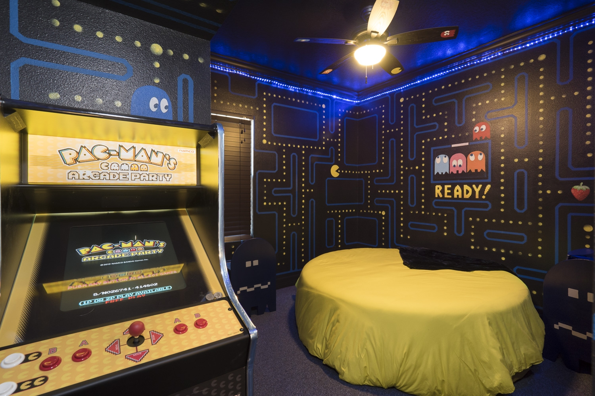

Somos la cadena de restaurantes de entrega rápida más grande, exitosa e innovadora de México y para alcanzar el estándar de servicio necesario para lograrlo, mantenemos una estricta política de eficiencia y trato ético y honesto hacia nuestros clientes, proveedores, colaboradores, asociados y a la comunidad en general.
Pacciza cumple 5 años de presencia en el mercado mexicano. Durante estos 5 años, Pacciza generó una revolución en el formato de distribución a domicilio de comida rápida con su emblemática campaña: “A domicilio en menos de 30 minutos o es gratis”. Su principal producto, la pizza, se adapta a las necesidades actuales de los consumidores mexicanos, al tiempo que continúa satisfaciendo al paladar más exigente. Y lo mejor de todo es que nuestros clientes pueden disfrutar de su pizza de una forma innovadora y diferente con nuestras maquinas arcade y la ambientación del juego que ha pasado generaciones tras generaciones PACMAN.
Cuando disfrutas una pizza de Pacciza disfrutas de una masa hecha a mano y recién horneada, con la mejor salsa más espesa y con más especias y un queso 100% mozzarella.
